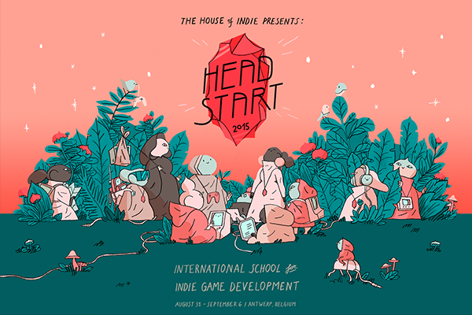
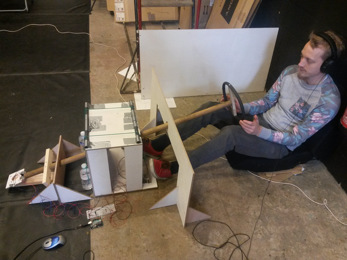
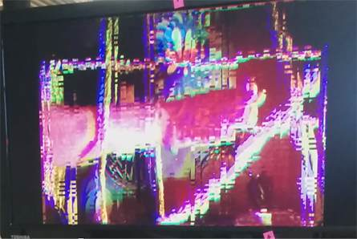
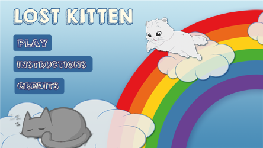

I make games and do a lot of other things!
Scroll to browse
I study Multimedia Technology at Karel De Grote in Antwerp. It's a very wide course and includes programming, audio, video, 3D, electronics, User Experience, project management, marketing, ...
I participated at Headstart 2015, an international summerschool for gamedevelopers who want to start their own studio.
It was a truly unique experience to be there!
Solar Clap is a 4-player co-op Clapping-rhythm game instalation.
I am currently working on Solar Clap with Michel Marsman. We do this in our free time.
Building horizon is a strategy game where your build tents to spawn troops, smash your head against oponents, and try to destoy the enemy castle.
It was made in a spontaneous gamejam with Alexandar Barratt and Jacob Goldfarb.
During the No Screen Jam, an even where you make a game that doesn't include a screen in 48 hours, We made a Car driving Simulator where you navigate by the sound of your environment.
At Zoomachines 2015, Me and my team made a game where you put your arm in a box, and you have to feed a monster in the "other dimension". You see your arm on a camera, with delay, and bunch of glichy distortions which only gets worse the more you strugle.
I know, the name is poorly chosen, but it's a totally different game.
This was my first android game. I made it alone in 1 weekend. You jump down from floor to floor without skipping one and try to reach as much floors as possible. It's quite addicting.
This was my first gamejam. Together with Alexandar Barratt and Anton Shumin, I made a chaotic game where you need to survive while finishing your game in time.
so that were my free time projects. I also made a few things at school!
Lost kitten is a first year project, made together with Phedra Moerloos and Thessa Moerloos.
It's a puzzle game where you have to find your way through labyrinths to reach the exit. The labyriths are different than you're used to though. The game has 5 levels to play.
In our first year, we had an assignment to make a stopmotion video on existing sound. A lot of peopel made a music video, I animated a Quote
It's not great, but it's there. I should have put more time in this one.
Another first year assignment was to make an didactical 3D animation.
I made an animation on how to make a network cable. It's quite compact but it looks good for a first Cinema4D project.